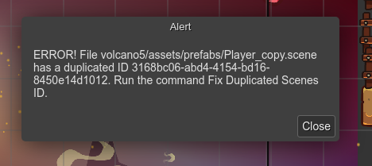

Troubleshooting
This is a chapter dedicated to common mistakes or issues you can find using the Scene Editor.
Scene dependencies model
The Scene Editor is a complex tool. It depends on the state of the whole project. A change in an asset file, a Asset Pack file or a prefab file, can affect to the Scene Editor content. For that reason, you may find a glitch or something weird in the editor, like an object without an image or an object with an out-dated image. In this case, you can do any other following steps:
Execute the Refresh Scene command: press
Ctrl+Alt+Uor find it in the context menu.Reload the project assets: press
Ctrl+Alt+Ror click on the Reload Project option in the Main menu.
Outdated generated code
It is possible that when you execute the game, the scene you see is different. A possible cause could be that the scene was not re-compiled after a prefab file change.
If you change a prefab file, for example, you change the type of the prefab object, then you should re-compile all the scenes referencing that prefab file. The quick solution is to re-compile the whole project: press Ctrl+Alt+B or select the Compile Project option in the Main menu.
Duplicated scene identifier
Each scene file has an identifier that should be unique in the project. When you create a new scene file, a new identifier is generated for it. However, if you copy the content of a scene file and create a new file with it, then you will get different files with the same identifier.
If it is the case, the editor will show an error message with the files with the same identifier:
You must fix that error because it could create unexpected behaviors.
To fix it, open the Command Palette (Ctrl+K) and run the Fix Duplicated Scenes ID command.
This command will generate a new identifier for all the scene files that share the same identifier. Only the original file is not modified, in this case, the file with the older modification time.
We recommend to use the Fix Duplicated Scenes ID command, but you can modify the scene identifier manually. Just open the file in a text editor and change the id field.
{
id: "write-here-a-unique-identifier",
// ...
}
The Scene Editor uses the Phaser.Utils.String.UUID() function to generate a new identifier. You can do the same.